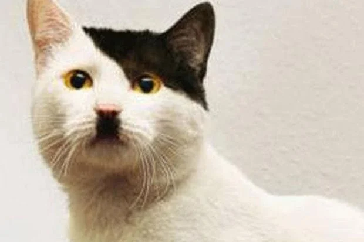
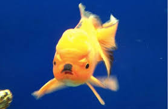
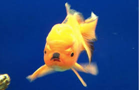
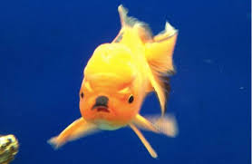
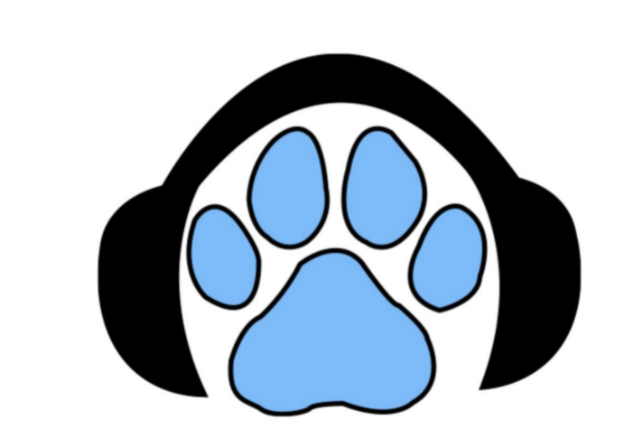

Meest bekeken episodes

 


episodes

S2- E10 Huisdieren aleen thuis laten
In deze episode hebben we het over hoelang je ene huisdier aleen kan laten en hoe je dat het best kan opbouwen.
S2- E9 Kosten van dieren
In deze episode hebben we het overhou duur sommige dieren zijn om ana teschaffen en om te onderhouden.
S2- E8 Grootste dieren misverstanden
In deze aflevering hebben we het over de grootste dieren misverstanden en hoe die tot stand zijn gekomen.
S2- E7 Stoffen weetjes
In deze episode hebben we het over welke stoffen slecht voor uw huisdier zijn en welke dus te vermijden.